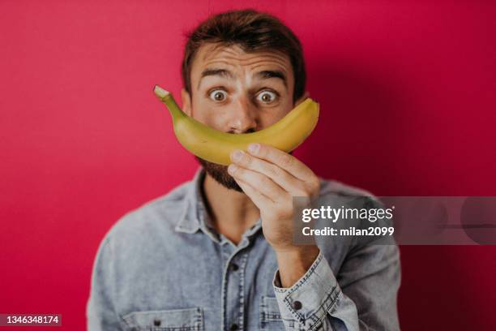

Premierement quand tu lui envoie un message il repond directemet et cest cool
5 secondes après il est la ( cest un peux une totally spies )
Il ce ramène avec un NERF pour voir si on travail dur ( entré de fou )
Il trouve toujours des solutions sur algoblocs
Heureusement qu'il est la sinon on serait tous perdu
C'est tout ce que je sais pour le moment mais ce qui est sur c'est qu'il est sympa
La couleur préférée de Maxime est le vert
En plus Maxime a toujours la banane !!

Voici une photo de Maxime qui a la banane
En tout cas ce qui est sur c'est que Maxime est le meilleur. Il y'a aucun débat possible car je dit la vérité Je mettrais à jour ce site dans le futur pour prouver que Maxime est le meilleur Il a surtout une image de profil tout simplement magnifique
Maintenant passons au défaut :
A désole les amis j'ai beau cherché j'ai pas trouvé. Pourtant j'ai essayé en vain :(
Mais evidemmet que si je trouve je vous le ferais savoir sur ce site :)
Exercice ludique de Maxime !
Assez parler de Maxime passons a algoblocs !
Algoblocs permet de s'initier à la programmation avec des blocs à emboîter.
Les blocs sont transformés en code informatique et exécutés pour créer un dessin géométrique. Essayez maintenant vous verez cest facile.
Si c'est trop dur demandez à Maxime le meileur à algoblocs. En gros algoblocs est facilement accesible est simple a predre en main alors n'hésitez pas a l'essayer.
Voici un lien pour essayer celui ci Algoblocs
Solutions des niveau de algoblocs
Et oui vu que j'aime les personnes qui regardent mon sites je leur offres les reponses alors cliquée sur le lien.
Réponses algoblocs amusez vous bien :)
nan plus sérieusemet si vous n'arrivez pas un niveau vous pouvez aller sur internet même si malheureusemet c'est super simple.
CodinGame
CondinGame est un sorte de jeu avec des exercices de htlm
Ce site m'a appris enormemet de chose sur le htlm et grace à ce site j'ai fondé le miens.
Le voici en lien si vous voulez faire un site plus tard CodinGame
Document Web MDN
Document Web MDN est un site qui comporte plein de reponses sur par exemple commet mettre une couleur sur css et plein d'autre (mettre en gras, surligné ect...)
https://developer.mozilla.org/fr Avec sa vous pouvez laisser place a votre imagination car si vous bloquez vous pouvez lui demander et il vous repondra sans problème.
Grid Garden
CSS Grid Garden est un outil ludique et éducatif qui aide les développeurs, notamment les débutants, à maîtriser les concepts clés de Grid Layout de manière interactive et amusante.
Ce jeu est donc très simple a utiliser et a comprendre. Si vous n'y arrivez pas vous pouvez toujours regarder sur internet
Voici le lies pour y jouer GridGardenCSS Si vous n'y arrivez pas vous pouvez aller sur Grid garden reponses
Parti secrète
Alexandre le pro du html
Alors Alexandre cest le formateur, un truc cool, ça veut dire qu'i est tellement fort qu'il doit former des adultes. Stylé
Il a toujours une solution à nos problèmes. C'est un peux un super-héros. Ne le prend pas mal Maxime
Il a une photo de profil stylé aussi. Et surtout il reste toujours avec nous du coup même pas besoin d'evoyé un message discord.
Point negatifs
Ok la j'avoue Maxime gagne un point parce que Alexandre ce ramène pas avec un nerf.
Mais il est toujours cool Alexandre il est 100% fiable. Tester et approuvé comme Maxime